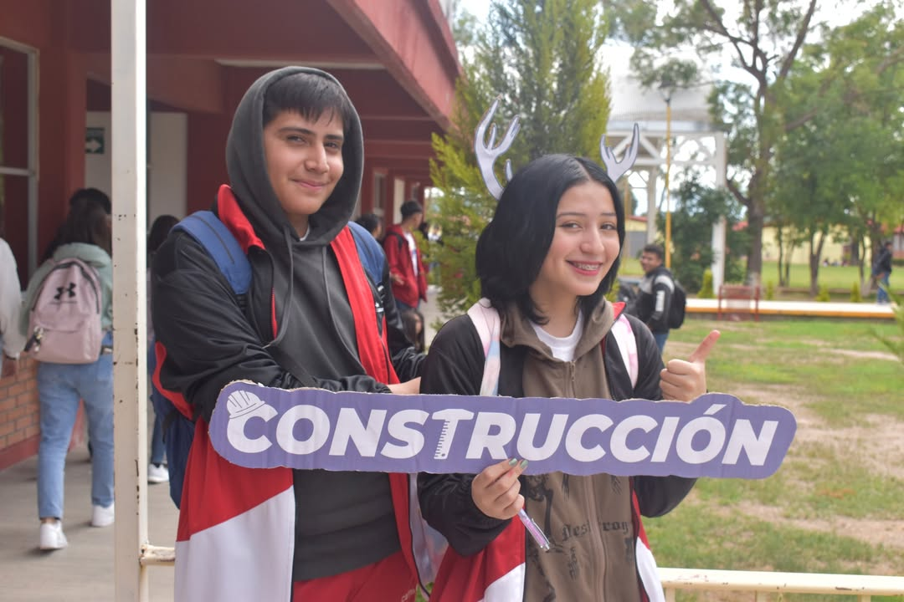
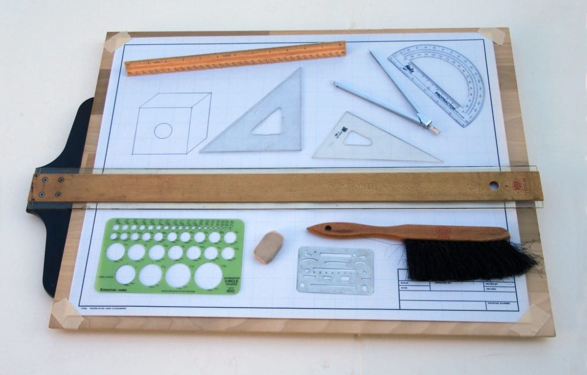
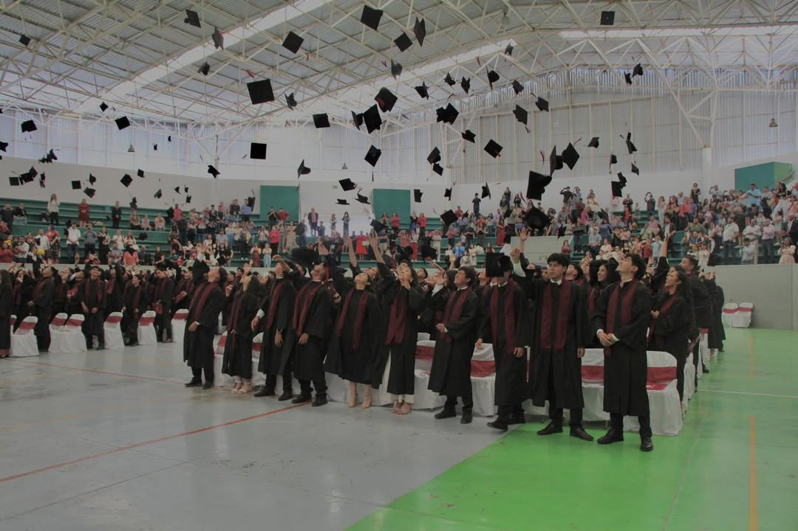

¿Qué es la especialidad en Construcción?
Una carrera técnica que forma profesionales capacitados en diseño, planeación y ejecución de obras como viviendas, edificios y estructuras.
Ventajas de estudiar Construcción
- Alta demanda laboral
- Capacitación técnica sólida
- Oportunidad de emprender
- Puerta a la Ingeniería Civil
Perfil del Egresado
El egresado es capaz de interpretar planos, calcular materiales y participar en la construcción y supervisión de obras con calidad y seguridad.
Materias destacadas

Levantamiento Topográfico
Es el proceso de medir y representar en un plano las características del terreno (relieve, límites, construcciones, etc.). Se realiza con instrumentos como estación total, GPS o niveles, y sirve para conocer la forma y dimensiones del terreno antes de diseñar o construir una obra.
Presupuesto de Obra: Qué es y Cómo se Hace:
Es el cálculo detallado del costo total de una obra, incluyendo materiales, mano de obra, maquinaria, transporte, y otros gastos. Sirve para planificar, evaluar y controlar los recursos del proyecto.
Saber más sobre la especialidad
Realiza dibujos de planos arquitectónicos y constructivos con equipo básico de dibujo
En este espacio llamado dibujo técnico nos adentramos al increíble mundo de la arquitectura desde cómo usar el equipo básico, desde regla T, escuadras, portaminas, plantillas, estilógrafos, etc. En este espacio, además de eso, te adentrarás en la paciencia, constancia y disciplina. Durante el primer año harás tus primeras láminas, tu primer plano y muchas cosas más.
Realiza dibujos de planos arquitectonicos y constructivos de software
Este espacio de dibujo de planos en software todo se vuelve un poco más fácil debido a que gracias a las instalaciones de centros de cómputo podrás usar herramientas de dibujo como AutoCAD. Esto y dibujo técnico se practican el mismo año, por lo que la mayoría de planos se realizan en computadora y papel.
Supervisa instalaciones electronicas
Como su nombre lo dice, tendrás la oportunidad de entrar al mundo de la ingeniería eléctrica en parte, ya que aprenderás desde las distribuciones de un plano eléctrico, ubicaciones de apagadores, conectores, tipo de cable y su debido voltaje, además de poder conocer cuánta energía consume algunos aparatos y el tipo de corriente que deben llevar. Durante este ciclo realizarás planos eléctricos de plantas arquitectónicas.
Supervisa la instalación hidrosanitaria
Para empezar, una instalación hidrosanitaria trata sobre el suministro de agua potable y la disposición de aguas residuales en un edificio o vivienda, asegurando la salud y el bienestar. Esto incluye sistemas de tuberías, conexiones, aparatos sanitarios, desagües y ventilaciones. Todo esto lo estarás aprendiendo durante tu 4to semestre; realizarás planos sobre este tema tanto en papel o block de dibujo como en computadora.
Supervisa instlaciones especiales
Las instalaciones especiales son todas aquellas que son en parte eléctricas pero en parte no, ya que las instalaciones especiales son desde mini Split, aire acondicionado, timbre, cable de TV, sensores de humo. Todo esto igual lo verás en 4to semestre; aprenderás a distribuir estas instalaciones.
Constru Fest
Todos los años el 3 de mayo se celebra el día de la cruz y el día del albañil, por lo cual nuestra especialidad de construcción hace el Constru Fest donde se coloca una cruz hecha por varilla y se celebra tanto a los alumnos como a los maestros de la especialidad de construcción. Un festival para la convivencia de todos los grados de la especialidad de construcción.